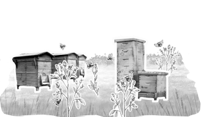
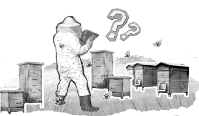
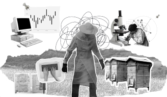
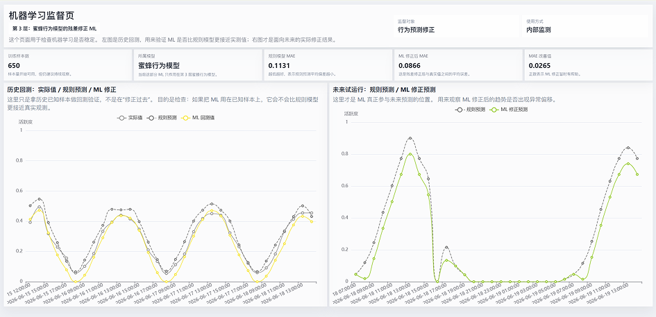

.png)
Map Interface
The entry view connects field location, weather, nectar sources and system status in one map-based workspace.
Website System / Predictive Support
A web-based system that translates weather, flowering and bee activity data into readable decision support for beekeeping practice.
.png)
Bee Cue is a graduation design project that translates ecological prediction into a readable, interactive and working web system for beekeeping practice.
Graduation Design / Interactive Website / Data Visualization System
I led the end-to-end design and development of Bee Cue’s digital system, from system architecture and prediction logic to interaction design, data visualization and front-end implementation.
Collaborators contributed the ecological corridor design and hive sensing component.
2025 - 2026
Working Website / Data Dashboard / Prediction Logic / Project Film / Research Report
HTML, CSS, JavaScript, Weather API, Sensor Data, Rule-based Models, Machine Learning Correction
China Academy of Art, Art & Technology Graduation Project
Bee Cue supports judgment by making ecological change readable, traceable and comparable while leaving final decisions to beekeepers.
The final outcome is a functional web system connecting a site-based map, ecological indexes, bee activity data, scenario comparison and AI-assisted follow-up.
.png)
The entry view connects field location, weather, nectar sources and system status in one map-based workspace.
.png)
This layer presents nectar plants, flowering periods and environmental conditions, showing how resource availability changes across time and space.
.png)
Bee activity is translated into heatmaps, sensor records and activity curves, making behavioral changes visible and comparable.
.png)
Strategy cards organize possible responses based on the current ecological state, allowing users to compare references before taking action.
.png)
Each strategy expands into detailed guidance, including conditions, operation steps, risk notes and an entry to AI-assisted conversation.
A complete walkthrough of the live flow—from environmental layers and bee activity to mismatch risk and scenario-based references.
Climate change destabilizes the timing between flowering and bee activity, making nectar windows and mismatch risk harder to judge through experience alone.
Temperature, rainfall and extreme weather are making ecological rhythms less stable.

Earlier, delayed or shortened blooms make optimal nectar-flow periods harder to anticipate.

Weather, flowering and colony condition must be interpreted together in the field.

Scattered sources are difficult to translate into timely and practical judgment.
Literature, field observation and data mapping established the ecological and operational context for the system.
The research began with phenological mismatch, pollination, climate change and agricultural decision support systems.


Field observation focused on the beekeeping site, nectar plant distribution, seasonal changes and local environmental conditions.


The system was built around three main types of information: weather data, flowering data and bee activity data.


Three principles guided the system: reveal ecological change, explain prediction clearly and preserve the user’s final judgment.


Bee Cue combines transparent rule-based ecological models with a machine learning correction layer. A daily automated pipeline synchronizes new weather and hive observations, recalculates ecological indexes, retrains the correction model and exports updated results to the website.
Machine learning is used as a correction layer, not as a black-box replacement or automatic decision-making engine.

Two system-level changes shaped the final product.
The system moved away from one fixed answer and now lets users compare possibilities while retaining practical judgment.
Transparent ecological rules remain the foundation, while observed hive activity is used to recalibrate prediction deviation.
A connected map, dashboard, strategy and AI experience.
Daily synchronization, index recalculation, model retraining and web export.
706 samples · MAE 0.1085 → 0.0875 after ML-assisted correction.

Observed bee activity is compared with rule-based prediction and ML-adjusted output to evaluate how the correction layer changes prediction deviation.
Members of a beekeeping cooperative completed a task-based walkthrough of a pre-final desktop prototype, covering the full website flow.

Finding Technical strategy explanations were difficult to follow.
Design response Added role context, beekeeping vocabulary and clearer AI response constraints.
Finding Displaying all plant information at once made the map difficult to read.
Design response Prioritized current nectar-source plants and revealed other plant information through interaction.
Finding Users tended to skip long blocks of operational instructions.
Design response Divided guidance into shorter steps and paired it with line-drawing illustrations.
A short film introducing the ecological background, system logic, interface design and application scenario of Bee Cue.
This project strengthened my ability to connect ecological research, data structures, prediction logic, interaction design and front-end implementation within one working system.
Future development will focus on longer-term field data, cross-season and cross-site validation, improved mobile use and stronger feedback loops with practitioners.